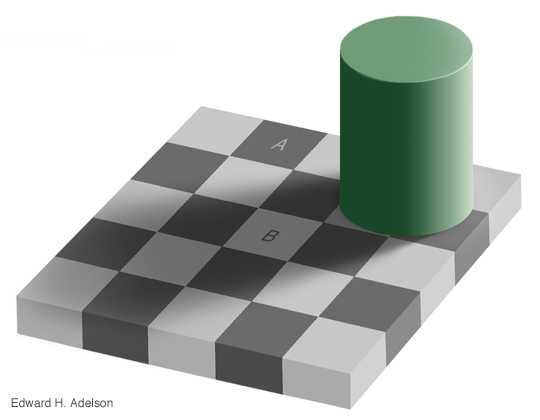

ALGUNAS ILUSIONES OPTICAS

 La imagen de la izquierda MarMon, tiene unas dimensiones 50x50 pixels.¿Reconoces al presonaje?,es actriz y la palabra en negrita da una pista.
La imagen de la izquierda MarMon, tiene unas dimensiones 50x50 pixels.¿Reconoces al presonaje?,es actriz y la palabra en negrita da una pista.
Sin embargo, al pulsar sobre la imagen se debe abrir otra página web para ver la imagen a tamaño original.
¿Puedes reconocer al personaje?,aunque la foto es la misma, parece ser que ya no se trata de una actriz, sino de un famoso científico.
En la imagen de la derecha a la derecha, aparece un tablero y sobre él un cilindro que da la sombra. Una de las casillas a la que no afecta la sobra tiene escrita la letra A y otra de las casillas afectadas por la sobre del cilindro tiene escrita la letra B.
¿Puedes decir si las dos casillas tienen el mismo color o diferente? Al pulsar sbre la imagen se debe abrir otra página web en la que aparecerán las casillas recortadas para comprobar si tienen el mismo color o no.